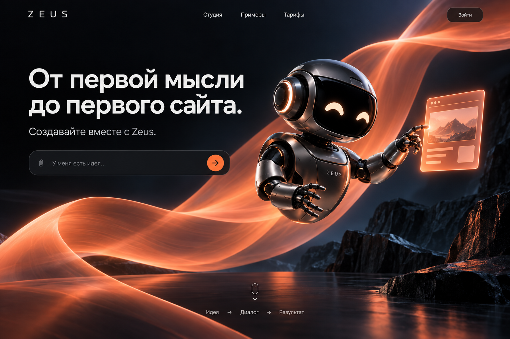
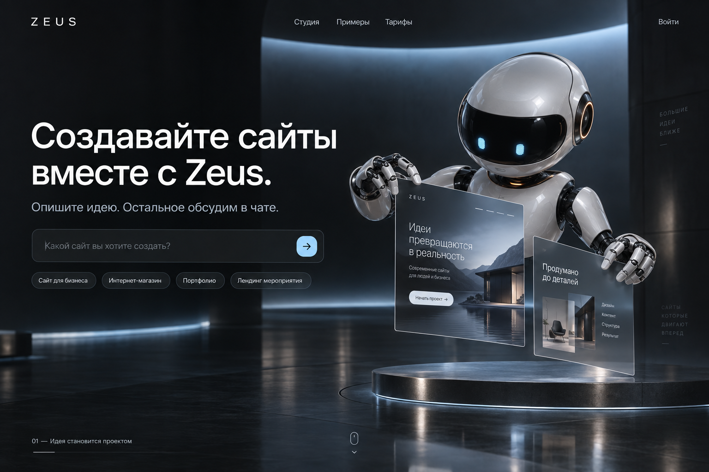
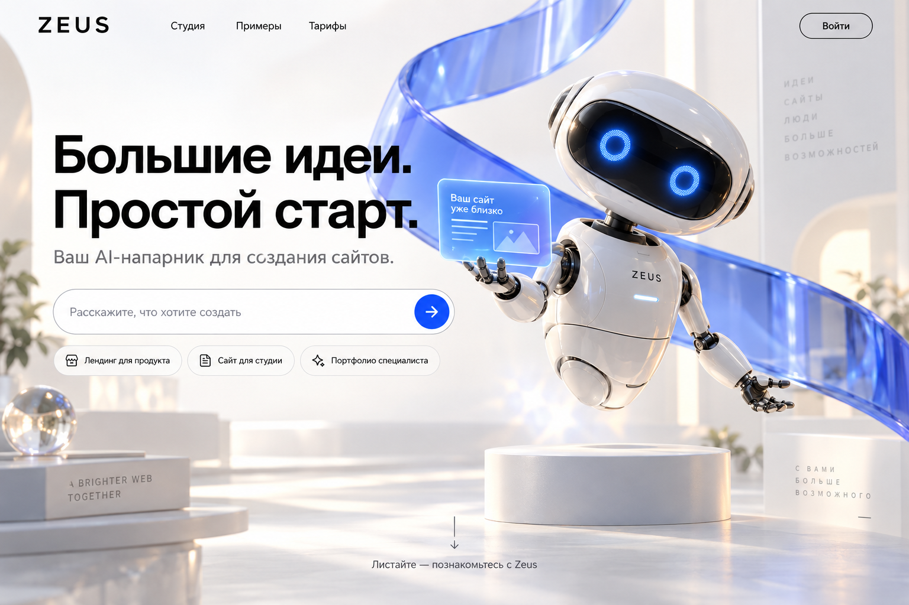

ZEUS / ВЫБОР ВИЗУАЛЬНОГО НАПРАВЛЕНИЯ
Три разных характера.
Один будущий Zeus.
Нажми на картинку, чтобы открыть её в полном размере. Сравни робота, фон, свет и читаемость текста. Напиши в чате, какой вариант ближе — или что хочется взять из разных вариантов.
Это визуальные концепты, созданные с imagegen. Они показывают желаемый внешний вид. Кнопки внутри картинок и 3D пока не интерактивны; текущая рабочая студия находится по прежней ссылке.
01 — PULSE Рекомендуемое направление
Графитовый робот, оранжевая световая лента и тёмный объёмный фон. Самый выразительный из трёх вариантов.

02 — ORBIT
Белый робот в тёмной студии, холодный свет и стеклянные страницы сайта. Более строгий, технологичный характер.

03 — ATELIER
Светлое пространство, белая керамика и синее стекло. Воздушный, дружелюбный вариант.
